Boost.odeint
- おでいんと[要出典]
- 常微分方程式の
初期値問題の
数値近似を求めるライブラリ - 普通の積分の数値近似も OK
- Boost 1.53.0 から

http://www.boost.org/doc/libs/release/libs/numeric/odeint/doc/html/index.html
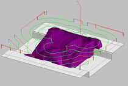 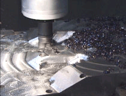
https://www.cgsys.co.jp/g/products/CAM-TOOL/3dcam_cl.htm
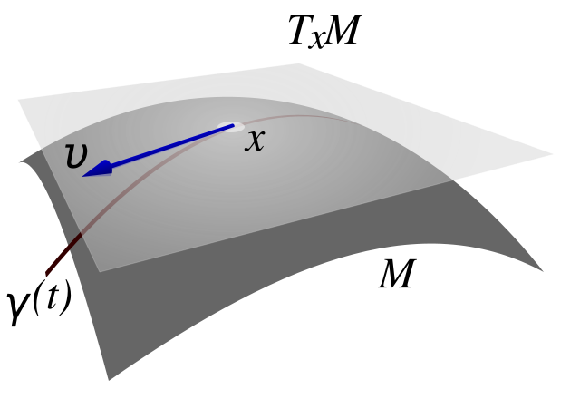 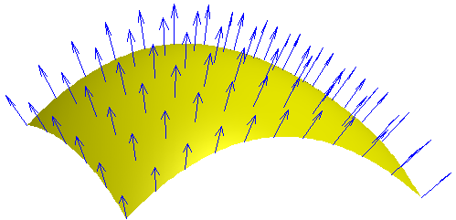
http://en.wikipedia.org/wiki/Tangent_space
http://en.wikipedia.org/wiki/Normal_(geometry)
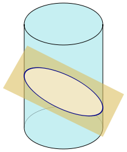
http://en.wikipedia.org/wiki/Cross_section_(geometry)

http://www.boost.org/doc/libs/release/libs/numeric/odeint/doc/html/index.html
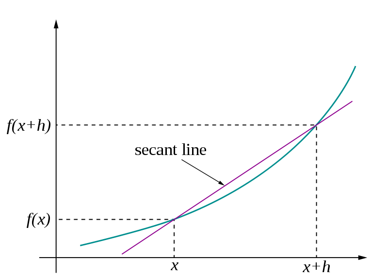 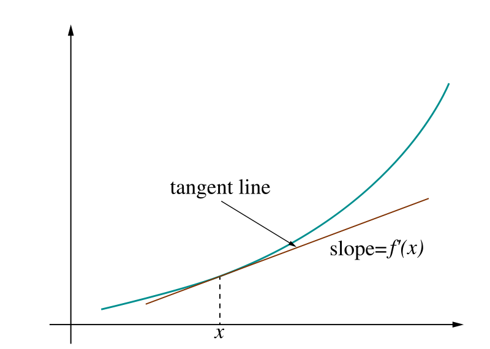
http://en.wikipedia.org/wiki/Derivative
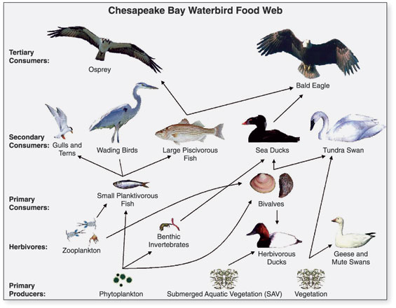
http://en.wikipedia.org/wiki/Galaxy
http://en.wikipedia.org/wiki/Food_chain
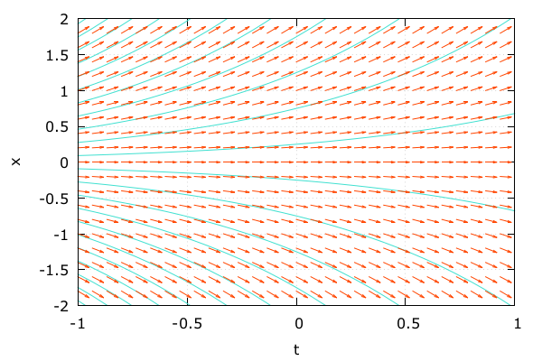
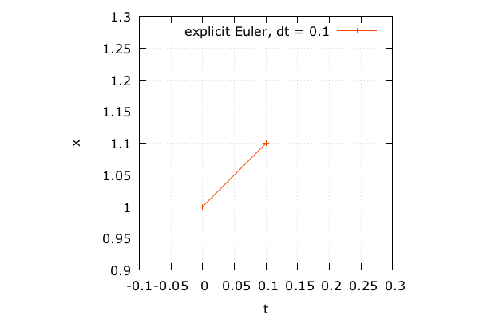
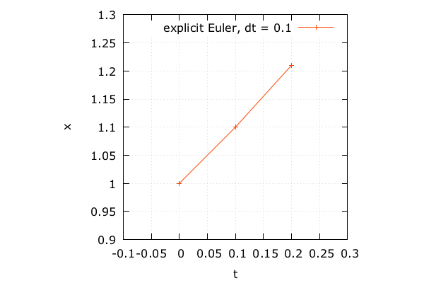
#include <iostream>
#include <array>
#include <boost/numeric/odeint.hpp>
namespace odeint = boost::numeric::odeint;
using state_type = std::array< double, 1 >;auto exponential = [](
const state_type &x,
state_type &dxdt,
const double /* t */
) {
dxdt[ 0 ] = x[ 0 ]; // x`(t) = x(t)
};auto x0 = state_type{ 1.0 }; // 初期状態
auto t0 = 0.0; // 開始パラメータ
auto t1 = 1.0; // 終了パラメータ
auto dt = 0.1; // ステップauto stepper =
odeint::euler< state_type >();
odeint::integrate_const(
stepper, exponential, x0, t0, t1, dt,
[](const state_type &x, const double t){
std::cout << t << "\t"
<< x[ 0 ] << std::endl;
} );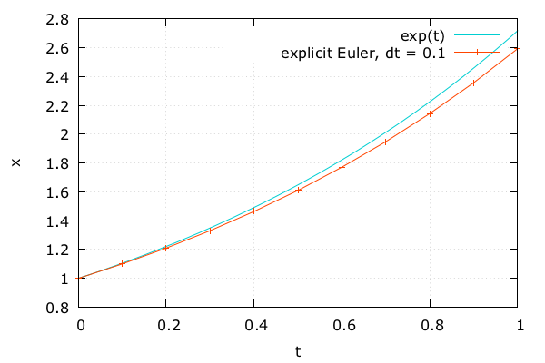
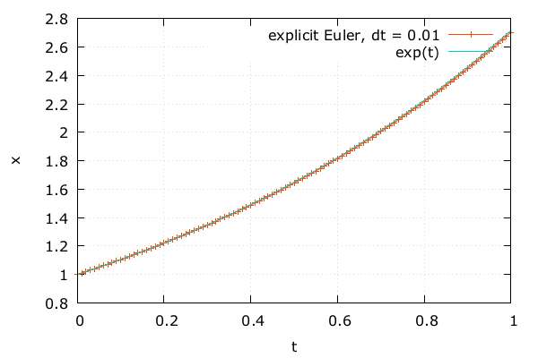
auto stepper =
odeint::runge_kutta4< state_type >();
odeint::integrate_const(
stepper, exponential, x0, t0, t1, dt,
[](const state_type &x, const double t){
std::cout << t << "\t"
<< x[ 0 ] << std::endl;
} );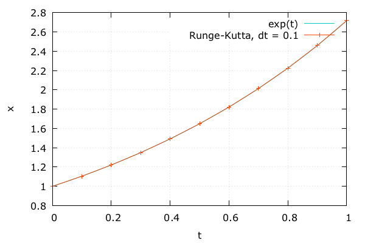
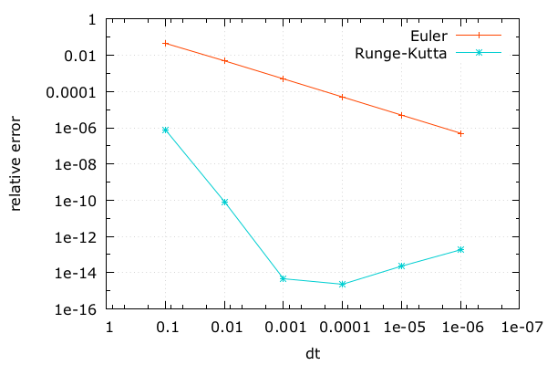
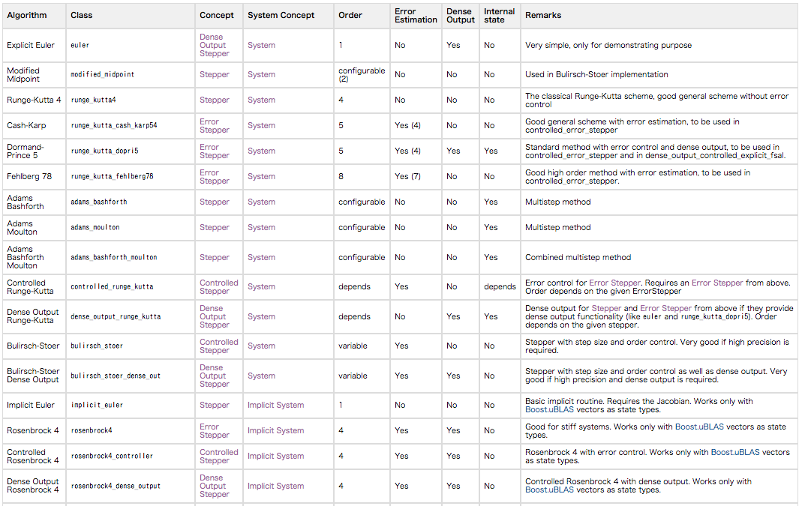
odeint::eulerodeint::runge_kutta4odeint::runge_kutta_dopri5odeint::runge_kutta_fehlberg78odeint::eulerodeint::implicit_eulerodeint::rosenbrock4odeint::adams_bashforthodeint::bulirsch_stoerhttps://www.flickr.com/photos/jqpubliq/17180604744/
using state_type = std::array< double, 2 >;
auto clothoid = [](
const state_type &/* x */,
state_type &dxdt,
const double t
) {
dxdt[ 0 ] = cos( t * t / 2.0 ); // x`
dxdt[ 1 ] = sin( t * t / 2.0 ); // y`
}auto x0 = state_type{ 0.0, 0.0 }; // 初期状態
auto t0 = 0.0;
auto t1 = 10.0;
auto dt = 0.01;
odeint::integrate(
clothoid, x0, t0, t1, dt,
[]( const state_type &x, const double t ){
std::cout << x[ 0 ] << "\t"
<< x[ 1 ] << std::endl;
} );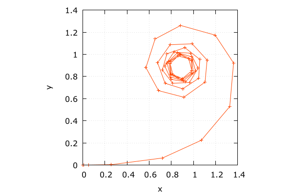
integrate は dt を適応的に変化させているt1 のときの結果が欲しければこれで十分runge_kutta_dopri5 と integrate_const を使うauto stepper =
odeint::controlled_runge_kutta<
odeint::runge_kutta_dopri5< state_type > >();
odeint::integrate_const(
stepper, clothoid, x0, t0, t1, dt,
[]( const state_type &x, const double t ){
std::cout << x[ 0 ] << "\t"
<< x[ 1 ] << std::endl;
} );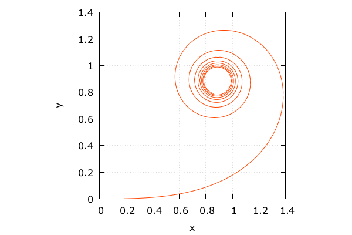
\[ z^\prime(t) = \exp \frac{it^2}{2}, i = \sqrt {-1} \]
array から complex に変更するだけ//using state_type = std::array< double, 2 >;
using state_type = std::complex< double >;
auto clothoid = [](
const state_type &/* x */,
state_type &dxdt,
const double t
) {
// dxdt[ 0 ] = cos( t * t / 2.0 );
// dxdt[ 1 ] = sin( t * t / 2.0 );
dxdt = std::exp( 1i * t * t / 2.0 );
}; auto stepper =
odeint::controlled_runge_kutta<
odeint::runge_kutta_dopri5< state_type > >();
odeint::integrate_const(
stepper, clothoid, x0, t0, t1, dt,
[](const state_type &x, const double t){
// std::cout << x[ 0 ] << "\t"
// << x[ 1 ] << std::endl;
std::cout << x.real() << "\t"
<< x.imag() << std::endl;
} );using state_type = std::vector< double >;
auto astro = [](
const state_type &x,
state_type &dxdt,
const double /*t*/
) {
dxdt[ 0 ] = x[ 2 ]; // u`
dxdt[ 1 ] = x[ 3 ]; // v`
auto r2 = x[ 0 ] * x[ 0 ] + x[ 1 ] * x[ 1 ];
auto r3 = pow( r2, 3.0 / 2.0 );
dxdt[ 2 ] = -x[ 0 ] / r3; // x`
dxdt[ 3 ] = -x[ 1 ] / r3; // y`
};auto x0 = state_type{ 3.0, 0.0, 0.3, 0.2 };
auto t0 = 0.0, t1 = 16.0, dt = 0.01;
auto stepper =
odeint::controlled_runge_kutta<
odeint::runge_kutta_dopri5< state_type > >();
odeint::integrate_const(
stepper, astro, x0, t0, t1, dt,
[](const state_type &x, const double t){
std::cout << t << "\t"
<< x[ 0 ] << "\t"
<< x[ 1 ] << std::endl;
} );
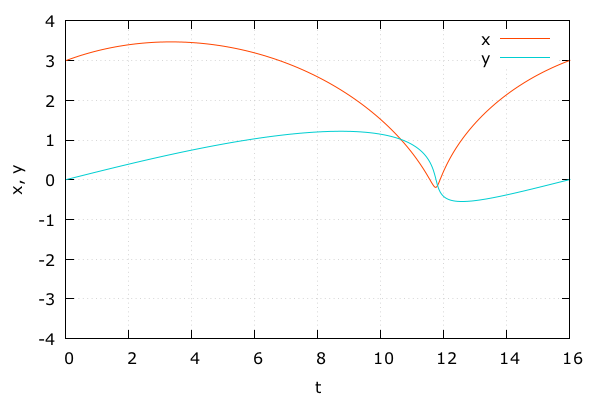
dt = 0.2auto x0 = state_type{ 3.0, 0.0, 0.3, 0.2 };
auto t0 = 0.0, t1 = 16.0, dt = 0.2;
auto stepper =
odeint::controlled_runge_kutta<
odeint::runge_kutta_dopri5< state_type > >();
odeint::integrate_const(
stepper, astro, x0, t0, t1, dt,
[](const state_type &x, const double t){
std::cout << t << "\t"
<< x[ 0 ] << "\t"
<< x[ 1 ] << std::endl;
} );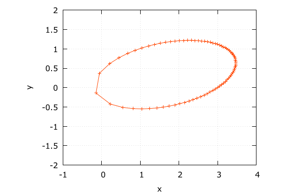
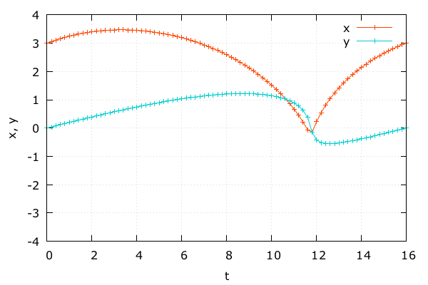
dt = 0.2auto x0 = state_type{ 3.0, 0.0, 0.3, 0.2 };
auto t0 = 0.0, t1 = 16.0, dt = 0.2;
auto stepper =
odeint::controlled_runge_kutta<
odeint::runge_kutta_dopri5< state_type > >();
odeint::integrate_adaptive(
stepper, astro, x0, t0, t1, dt,
[](const state_type &x, const double t){
std::cout << t << "\t"
<< x[ 0 ] << "\t"
<< x[ 1 ] << std::endl;
} );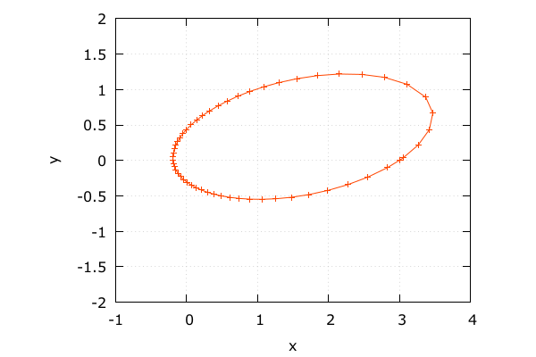
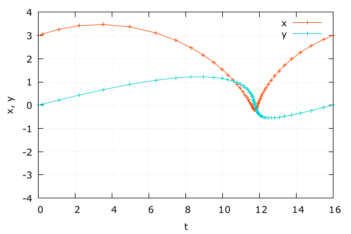